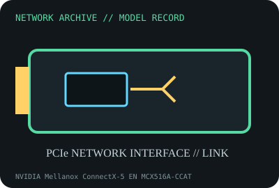

[ MODEL-SPECIFIC NETWORK HARDWARE RECORD ]
NVIDIA Mellanox ConnectX-5 EN MCX516A-CCAT
Dual-port 100GbE QSFP28 PCIe adapter; record model and board PSID before firmware use. Specifications are tied to this named product; confirm the physical label, revision and source documentation.

IDENTIFICATION: Verify exact PID/model, revision, label and host support. The catalog separates nominal PHY/link specifications from measured throughput; no benchmark is asserted unless explicitly recorded.
Model-specific specifications and compatibility
| Subcategory | 10 Gigabit and server adapters |
|---|---|
| Exact product/model | NVIDIA Mellanox ConnectX-5 EN MCX516A-CCAT |
| Bus, ports and physical interface | PCI Express 3.0 x16 host interface; two QSFP28 cages; exact bracket and cooling depend on card assembly. |
| PHY, radio or optical interface | ConnectX-5 EN Ethernet controller. Model-family modes include Ethernet at up to 100Gb/s per port; supported lower rates and media require compatible QSFP28 transceiver, DAC/AOC and firmware. |
| Nominal rate (not measured) | Up to 100 Gb/s nominal per port; the two-port line-rate sum is not measured throughput and PCIe 3.0 x16 host capacity, packet mix and platform affect simultaneous traffic. |
| Measured throughput | No measured benchmark is asserted. Any 100GbE test must include host PCIe generation/width, port mode, firmware, optics, switch, packet size and traffic-generator method. |
| Driver, OS and firmware | NVIDIA documents Linux mlx5_core/mlx5_en and NVIDIA OFED/WinOF-2 options by release. Firmware images are PSID-specific; use NVIDIA firmware tooling and a supported OS/kernel combination. |
| Platform/media compatibility | Needs PCIe x16 electrical support, airflow, compatible QSFP28 media and a switch port configured for the same Ethernet rate. VPI, InfiniBand, secure-host and alternate PSID variants must not be treated as the same product. |
| Variant warning | MCX516A-CCAT is a dual-port QSFP28 Ethernet part number; visually similar MCX516A models with different suffixes/PSID can have different features, firmware and interface modes. Verify the label and PSID. |
Revision, operation and measurement notes
MCX516A-CCAT is a dual-port QSFP28 Ethernet part number; visually similar MCX516A models with different suffixes/PSID can have different features, firmware and interface modes. Verify the label and PSID.
NVIDIA documents Linux mlx5_core/mlx5_en and NVIDIA OFED/WinOF-2 options by release. Firmware images are PSID-specific; use NVIDIA firmware tooling and a supported OS/kernel combination.
No measured benchmark is asserted. Any 100GbE test must include host PCIe generation/width, port mode, firmware, optics, switch, packet size and traffic-generator method.
Archival, ESD and preservation notes
Capture label, PSID, serial, PCI IDs, firmware and both port MACs. ESD shielding and caps are required; avoid looking into optics and preserve removable modules separately.
Retain source provenance and the revision/date of each supporting document. Store public records without credentials, personal information or other secrets.
Primary manufacturer and standards sources
- NVIDIA ConnectX-5 EN specificationsPrimary manufacturer or standards reference; confirm exact part label, revision, and platform qualification.
- NVIDIA adapter firmware and toolsPrimary manufacturer or standards reference; confirm exact part label, revision, and platform qualification.
- IEEE 802.3 Ethernet standardsPrimary manufacturer or standards reference; confirm exact part label, revision, and platform qualification.
Manufacturer source links are provided for the stated model or exact product family; use the board label and the official revision-specific compatibility list for final qualification.